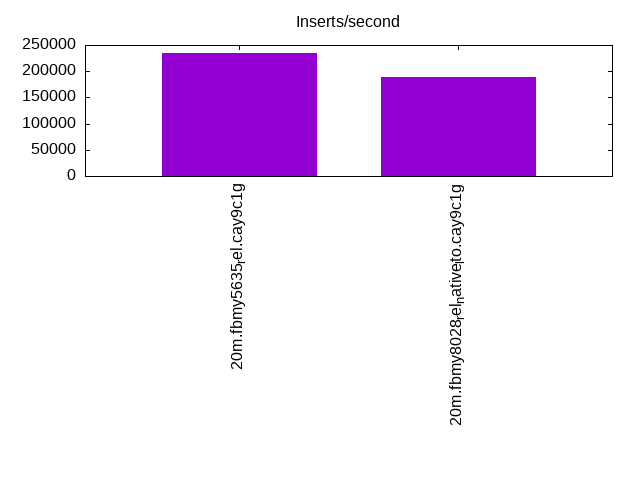
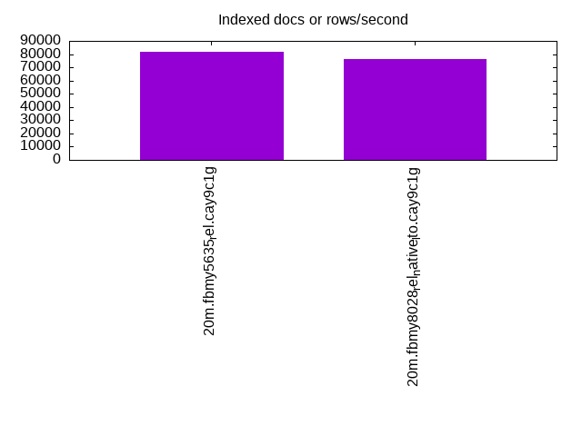
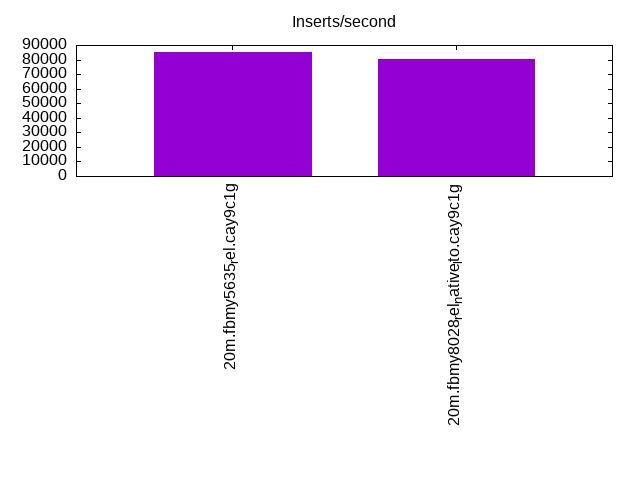
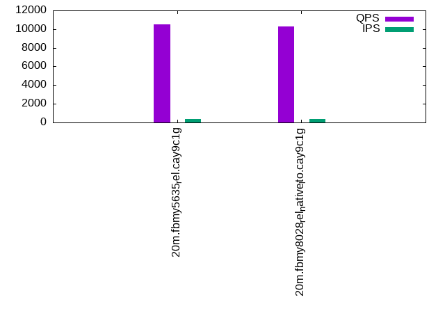
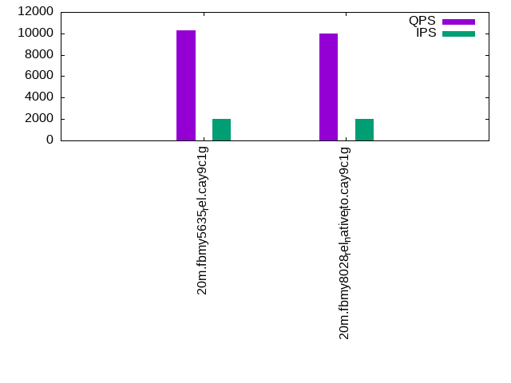
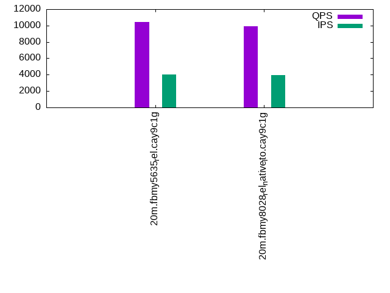

This is a report for the insert benchmark with 20M docs and 4 client(s). It is generated by scripts (bash, awk, sed) and Tufte might not be impressed. An overview of the insert benchmark is here and a short update is here. Below, by DBMS, I mean DBMS+version.config. An example is my8020.c10b40 where my means MySQL, 8020 is version 8.0.20 and c10b40 is the name for the configuration file.
The test server has 8 AMD cores, 16G RAM and an NVMe SSD. It is described here as the Beelink. The benchmark was run with 4 clients and there were 1 or 2 connections per client (1 for queries, 1 for inserts). The benchmark loads 20M rows without secondary indexes, creates secondary indexes, loads another 20M rows then does 3 read+write tests for one hour each that do queries as fast as possible with 100, 500 and then 1000 writes/second/client concurrent with the queries. All clients share one table. The database is cached by the OS page cache but not by the storage engine. Clients and the DBMS share one server. The per-database configs are in the per-database subdirectories here.
The tested DBMS are:
The numbers are inserts/s for l.i0 and l.i1, indexed docs (or rows) /s for l.x and queries/s for q*.2. The values are the average rate over the entire test for inserts (IPS) and queries (QPS). The range of values for IPS and QPS is split into 3 parts: bottom 25%, middle 50%, top 25%. Values in the bottom 25% have a red background, values in the top 25% have a green background and values in the middle have no color. A gray background is used for values that can be ignored because the DBMS did not sustain the target insert rate. Red backgrounds are not used when the minimum value is within 80% of the max value.
| dbms | l.i0 | l.x | l.i1 | q100.1 | q500.1 | q1000.1 |
|---|---|---|---|---|---|---|
| 20m.fbmy5635_rel.cay9c1g | 235294 | 81707 | 85470 | 10530 | 10287 | 10466 |
| 20m.fbmy8028_rel_native_lto.cay9c1g | 188679 | 76136 | 80321 | 10251 | 9972 | 9915 |
This table has relative throughput, throughput for the DBMS relative to the DBMS in the first line, using the absolute throughput from the previous table.
| dbms | l.i0 | l.x | l.i1 | q100.1 | q500.1 | q1000.1 |
|---|---|---|---|---|---|---|
| 20m.fbmy5635_rel.cay9c1g | 1.00 | 1.00 | 1.00 | 1.00 | 1.00 | 1.00 |
| 20m.fbmy8028_rel_native_lto.cay9c1g | 0.80 | 0.93 | 0.94 | 0.97 | 0.97 | 0.95 |
This lists the average rate of inserts/s for the tests that do inserts concurrent with queries. For such tests the query rate is listed in the table above. The read+write tests are setup so that the insert rate should match the target rate every second. Cells that are not at least 95% of the target have a red background to indicate a failure to satisfy the target.
| dbms | q100.1 | q500.1 | q1000.1 |
|---|---|---|---|
| fbmy5635_rel.cay9c1g | 399 | 1993 | 3989 |
| fbmy8028_rel_native_lto.cay9c1g | 399 | 1994 | 3987 |
| target | 400 | 2000 | 4000 |
l.i0: load without secondary indexes. Graphs for performance per 1-second interval are here.
Average throughput:
Insert response time histogram: each cell has the percentage of responses that take <= the time in the header and max is the max response time in seconds. For the max column values in the top 25% of the range have a red background and in the bottom 25% of the range have a green background. The red background is not used when the min value is within 80% of the max value.
| dbms | 256us | 1ms | 4ms | 16ms | 64ms | 256ms | 1s | 4s | 16s | gt | max |
|---|---|---|---|---|---|---|---|---|---|---|---|
| fbmy5635_rel.cay9c1g | 99.779 | 0.204 | 0.003 | 0.013 | 0.117 | ||||||
| fbmy8028_rel_native_lto.cay9c1g | 99.384 | 0.370 | 0.232 | 0.013 | 0.114 |
Performance metrics for the DBMS listed above. Some are normalized by throughput, others are not. Legend for results is here.
ips qps rps rmbps wps wmbps rpq rkbpq wpi wkbpi csps cpups cspq cpupq dbgb1 dbgb2 rss maxop p50 p99 tag 235294 0 0 0.0 125.4 49.7 0.000 0.000 0.001 0.216 21854 72.2 0.093 25 0.7 1.7 0.3 0.117 70024 17881 20m.fbmy5635_rel.cay9c1g 188679 0 0 0.0 103.7 38.1 0.000 0.000 0.001 0.207 18379 68.2 0.097 29 0.7 2.0 0.7 0.114 53548 400 20m.fbmy8028_rel_native_lto.cay9c1g
l.x: create secondary indexes.
Average throughput:
Performance metrics for the DBMS listed above. Some are normalized by throughput, others are not. Legend for results is here.
ips qps rps rmbps wps wmbps rpq rkbpq wpi wkbpi csps cpups cspq cpupq dbgb1 dbgb2 rss maxop p50 p99 tag 81707 0 0 0.0 32.1 12.4 0.000 0.000 0.000 0.155 229 12.7 0.003 12 1.4 2.5 1.3 0.008 NA NA 20m.fbmy5635_rel.cay9c1g 76136 0 0 0.0 29.6 11.5 0.000 0.000 0.000 0.155 373 12.7 0.005 13 1.4 2.6 1.9 0.008 NA NA 20m.fbmy8028_rel_native_lto.cay9c1g
l.i1: continue load after secondary indexes created. Graphs for performance per 1-second interval are here.
Average throughput:
Insert response time histogram: each cell has the percentage of responses that take <= the time in the header and max is the max response time in seconds. For the max column values in the top 25% of the range have a red background and in the bottom 25% of the range have a green background. The red background is not used when the min value is within 80% of the max value.
| dbms | 256us | 1ms | 4ms | 16ms | 64ms | 256ms | 1s | 4s | 16s | gt | max |
|---|---|---|---|---|---|---|---|---|---|---|---|
| fbmy5635_rel.cay9c1g | 99.540 | 0.451 | 0.005 | 0.004 | 0.103 | ||||||
| fbmy8028_rel_native_lto.cay9c1g | 99.120 | 0.757 | 0.117 | 0.006 | 0.133 |
Performance metrics for the DBMS listed above. Some are normalized by throughput, others are not. Legend for results is here.
ips qps rps rmbps wps wmbps rpq rkbpq wpi wkbpi csps cpups cspq cpupq dbgb1 dbgb2 rss maxop p50 p99 tag 85470 0 7 0.8 158.5 64.3 0.000 0.010 0.002 0.770 19439 70.0 0.227 66 3.8 5.5 1.4 0.103 21776 15589 20m.fbmy5635_rel.cay9c1g 80321 0 6 0.8 155.7 60.5 0.000 0.010 0.002 0.772 18091 71.2 0.225 71 3.8 5.7 1.7 0.133 20436 15983 20m.fbmy8028_rel_native_lto.cay9c1g
q100.1: range queries with 100 insert/s per client. Graphs for performance per 1-second interval are here.
Average throughput:
Query response time histogram: each cell has the percentage of responses that take <= the time in the header and max is the max response time in seconds. For max values in the top 25% of the range have a red background and in the bottom 25% of the range have a green background. The red background is not used when the min value is within 80% of the max value.
| dbms | 256us | 1ms | 4ms | 16ms | 64ms | 256ms | 1s | 4s | 16s | gt | max |
|---|---|---|---|---|---|---|---|---|---|---|---|
| fbmy5635_rel.cay9c1g | 9.885 | 90.107 | 0.007 | 0.001 | 0.010 | ||||||
| fbmy8028_rel_native_lto.cay9c1g | 6.958 | 93.028 | 0.013 | 0.001 | nonzero | 0.019 |
Insert response time histogram: each cell has the percentage of responses that take <= the time in the header and max is the max response time in seconds. For max values in the top 25% of the range have a red background and in the bottom 25% of the range have a green background. The red background is not used when the min value is within 80% of the max value.
| dbms | 256us | 1ms | 4ms | 16ms | 64ms | 256ms | 1s | 4s | 16s | gt | max |
|---|---|---|---|---|---|---|---|---|---|---|---|
| fbmy5635_rel.cay9c1g | 99.514 | 0.486 | 0.014 | ||||||||
| fbmy8028_rel_native_lto.cay9c1g | 99.097 | 0.854 | 0.049 | 0.021 |
Performance metrics for the DBMS listed above. Some are normalized by throughput, others are not. Legend for results is here.
ips qps rps rmbps wps wmbps rpq rkbpq wpi wkbpi csps cpups cspq cpupq dbgb1 dbgb2 rss maxop p50 p99 tag 399 10530 25 0.3 7.3 1.7 0.002 0.029 0.018 4.319 39663 50.4 3.767 383 2.8 4.7 1.4 0.010 2606 2254 20m.fbmy5635_rel.cay9c1g 399 10251 25 0.3 7.3 1.7 0.002 0.030 0.018 4.346 38914 51.2 3.796 400 2.8 4.9 1.8 0.019 2589 2030 20m.fbmy8028_rel_native_lto.cay9c1g
q500.1: range queries with 500 insert/s per client. Graphs for performance per 1-second interval are here.
Average throughput:
Query response time histogram: each cell has the percentage of responses that take <= the time in the header and max is the max response time in seconds. For max values in the top 25% of the range have a red background and in the bottom 25% of the range have a green background. The red background is not used when the min value is within 80% of the max value.
| dbms | 256us | 1ms | 4ms | 16ms | 64ms | 256ms | 1s | 4s | 16s | gt | max |
|---|---|---|---|---|---|---|---|---|---|---|---|
| fbmy5635_rel.cay9c1g | 7.349 | 92.619 | 0.031 | 0.001 | nonzero | 0.024 | |||||
| fbmy8028_rel_native_lto.cay9c1g | 3.574 | 96.350 | 0.071 | 0.005 | nonzero | 0.019 |
Insert response time histogram: each cell has the percentage of responses that take <= the time in the header and max is the max response time in seconds. For max values in the top 25% of the range have a red background and in the bottom 25% of the range have a green background. The red background is not used when the min value is within 80% of the max value.
| dbms | 256us | 1ms | 4ms | 16ms | 64ms | 256ms | 1s | 4s | 16s | gt | max |
|---|---|---|---|---|---|---|---|---|---|---|---|
| fbmy5635_rel.cay9c1g | 98.842 | 1.147 | 0.011 | 0.046 | |||||||
| fbmy8028_rel_native_lto.cay9c1g | 94.074 | 5.794 | 0.132 | 0.062 |
Performance metrics for the DBMS listed above. Some are normalized by throughput, others are not. Legend for results is here.
ips qps rps rmbps wps wmbps rpq rkbpq wpi wkbpi csps cpups cspq cpupq dbgb1 dbgb2 rss maxop p50 p99 tag 1993 10287 0 0.0 7.3 1.8 0.000 0.000 0.004 0.902 38706 50.9 3.763 396 3.2 3.5 1.4 0.024 2541 2254 20m.fbmy5635_rel.cay9c1g 1994 9972 0 0.0 7.3 1.7 0.000 0.000 0.004 0.870 37741 51.5 3.785 413 3.2 3.6 1.8 0.019 2557 2094 20m.fbmy8028_rel_native_lto.cay9c1g
q1000.1: range queries with 1000 insert/s per client. Graphs for performance per 1-second interval are here.
Average throughput:
Query response time histogram: each cell has the percentage of responses that take <= the time in the header and max is the max response time in seconds. For max values in the top 25% of the range have a red background and in the bottom 25% of the range have a green background. The red background is not used when the min value is within 80% of the max value.
| dbms | 256us | 1ms | 4ms | 16ms | 64ms | 256ms | 1s | 4s | 16s | gt | max |
|---|---|---|---|---|---|---|---|---|---|---|---|
| fbmy5635_rel.cay9c1g | 6.563 | 93.324 | 0.108 | 0.005 | nonzero | 0.019 | |||||
| fbmy8028_rel_native_lto.cay9c1g | 2.372 | 97.424 | 0.197 | 0.008 | nonzero | 0.037 |
Insert response time histogram: each cell has the percentage of responses that take <= the time in the header and max is the max response time in seconds. For max values in the top 25% of the range have a red background and in the bottom 25% of the range have a green background. The red background is not used when the min value is within 80% of the max value.
| dbms | 256us | 1ms | 4ms | 16ms | 64ms | 256ms | 1s | 4s | 16s | gt | max |
|---|---|---|---|---|---|---|---|---|---|---|---|
| fbmy5635_rel.cay9c1g | 86.126 | 13.806 | 0.069 | 0.047 | |||||||
| fbmy8028_rel_native_lto.cay9c1g | 90.328 | 9.533 | 0.139 | 0.061 |
Performance metrics for the DBMS listed above. Some are normalized by throughput, others are not. Legend for results is here.
ips qps rps rmbps wps wmbps rpq rkbpq wpi wkbpi csps cpups cspq cpupq dbgb1 dbgb2 rss maxop p50 p99 tag 3989 10466 0 0.0 14.9 5.0 0.000 0.000 0.004 1.286 38177 53.6 3.648 410 3.7 4.9 1.4 0.019 2589 2285 20m.fbmy5635_rel.cay9c1g 3987 9915 0 0.0 14.7 4.8 0.000 0.000 0.004 1.234 37126 53.8 3.745 434 3.9 5.3 1.8 0.037 2493 2014 20m.fbmy8028_rel_native_lto.cay9c1g
l.i0: load without secondary indexes
Performance metrics for all DBMS, not just the ones listed above. Some are normalized by throughput, others are not. Legend for results is here.
ips qps rps rmbps wps wmbps rpq rkbpq wpi wkbpi csps cpups cspq cpupq dbgb1 dbgb2 rss maxop p50 p99 tag 235294 0 0 0.0 125.4 49.7 0.000 0.000 0.001 0.216 21854 72.2 0.093 25 0.7 1.7 0.3 0.117 70024 17881 20m.fbmy5635_rel.cay9c1g 188679 0 0 0.0 103.7 38.1 0.000 0.000 0.001 0.207 18379 68.2 0.097 29 0.7 2.0 0.7 0.114 53548 400 20m.fbmy8028_rel_native_lto.cay9c1g
l.x: create secondary indexes
Performance metrics for all DBMS, not just the ones listed above. Some are normalized by throughput, others are not. Legend for results is here.
ips qps rps rmbps wps wmbps rpq rkbpq wpi wkbpi csps cpups cspq cpupq dbgb1 dbgb2 rss maxop p50 p99 tag 81707 0 0 0.0 32.1 12.4 0.000 0.000 0.000 0.155 229 12.7 0.003 12 1.4 2.5 1.3 0.008 NA NA 20m.fbmy5635_rel.cay9c1g 76136 0 0 0.0 29.6 11.5 0.000 0.000 0.000 0.155 373 12.7 0.005 13 1.4 2.6 1.9 0.008 NA NA 20m.fbmy8028_rel_native_lto.cay9c1g
l.i1: continue load after secondary indexes created
Performance metrics for all DBMS, not just the ones listed above. Some are normalized by throughput, others are not. Legend for results is here.
ips qps rps rmbps wps wmbps rpq rkbpq wpi wkbpi csps cpups cspq cpupq dbgb1 dbgb2 rss maxop p50 p99 tag 85470 0 7 0.8 158.5 64.3 0.000 0.010 0.002 0.770 19439 70.0 0.227 66 3.8 5.5 1.4 0.103 21776 15589 20m.fbmy5635_rel.cay9c1g 80321 0 6 0.8 155.7 60.5 0.000 0.010 0.002 0.772 18091 71.2 0.225 71 3.8 5.7 1.7 0.133 20436 15983 20m.fbmy8028_rel_native_lto.cay9c1g
q100.1: range queries with 100 insert/s per client
Performance metrics for all DBMS, not just the ones listed above. Some are normalized by throughput, others are not. Legend for results is here.
ips qps rps rmbps wps wmbps rpq rkbpq wpi wkbpi csps cpups cspq cpupq dbgb1 dbgb2 rss maxop p50 p99 tag 399 10530 25 0.3 7.3 1.7 0.002 0.029 0.018 4.319 39663 50.4 3.767 383 2.8 4.7 1.4 0.010 2606 2254 20m.fbmy5635_rel.cay9c1g 399 10251 25 0.3 7.3 1.7 0.002 0.030 0.018 4.346 38914 51.2 3.796 400 2.8 4.9 1.8 0.019 2589 2030 20m.fbmy8028_rel_native_lto.cay9c1g
q500.1: range queries with 500 insert/s per client
Performance metrics for all DBMS, not just the ones listed above. Some are normalized by throughput, others are not. Legend for results is here.
ips qps rps rmbps wps wmbps rpq rkbpq wpi wkbpi csps cpups cspq cpupq dbgb1 dbgb2 rss maxop p50 p99 tag 1993 10287 0 0.0 7.3 1.8 0.000 0.000 0.004 0.902 38706 50.9 3.763 396 3.2 3.5 1.4 0.024 2541 2254 20m.fbmy5635_rel.cay9c1g 1994 9972 0 0.0 7.3 1.7 0.000 0.000 0.004 0.870 37741 51.5 3.785 413 3.2 3.6 1.8 0.019 2557 2094 20m.fbmy8028_rel_native_lto.cay9c1g
q1000.1: range queries with 1000 insert/s per client
Performance metrics for all DBMS, not just the ones listed above. Some are normalized by throughput, others are not. Legend for results is here.
ips qps rps rmbps wps wmbps rpq rkbpq wpi wkbpi csps cpups cspq cpupq dbgb1 dbgb2 rss maxop p50 p99 tag 3989 10466 0 0.0 14.9 5.0 0.000 0.000 0.004 1.286 38177 53.6 3.648 410 3.7 4.9 1.4 0.019 2589 2285 20m.fbmy5635_rel.cay9c1g 3987 9915 0 0.0 14.7 4.8 0.000 0.000 0.004 1.234 37126 53.8 3.745 434 3.9 5.3 1.8 0.037 2493 2014 20m.fbmy8028_rel_native_lto.cay9c1g
Insert response time histogram
256us 1ms 4ms 16ms 64ms 256ms 1s 4s 16s gt max tag 0.000 0.000 99.779 0.204 0.003 0.013 0.000 0.000 0.000 0.000 0.117 fbmy5635_rel.cay9c1g 0.000 0.000 99.384 0.370 0.232 0.013 0.000 0.000 0.000 0.000 0.114 fbmy8028_rel_native_lto.cay9c1g
TODO - determine whether there is data for create index response time
Insert response time histogram
256us 1ms 4ms 16ms 64ms 256ms 1s 4s 16s gt max tag 0.000 0.000 99.540 0.451 0.005 0.004 0.000 0.000 0.000 0.000 0.103 fbmy5635_rel.cay9c1g 0.000 0.000 99.120 0.757 0.117 0.006 0.000 0.000 0.000 0.000 0.133 fbmy8028_rel_native_lto.cay9c1g
Query response time histogram
256us 1ms 4ms 16ms 64ms 256ms 1s 4s 16s gt max tag 9.885 90.107 0.007 0.001 0.000 0.000 0.000 0.000 0.000 0.000 0.010 fbmy5635_rel.cay9c1g 6.958 93.028 0.013 0.001 nonzero 0.000 0.000 0.000 0.000 0.000 0.019 fbmy8028_rel_native_lto.cay9c1g
Insert response time histogram
256us 1ms 4ms 16ms 64ms 256ms 1s 4s 16s gt max tag 0.000 0.000 99.514 0.486 0.000 0.000 0.000 0.000 0.000 0.000 0.014 fbmy5635_rel.cay9c1g 0.000 0.000 99.097 0.854 0.049 0.000 0.000 0.000 0.000 0.000 0.021 fbmy8028_rel_native_lto.cay9c1g
Query response time histogram
256us 1ms 4ms 16ms 64ms 256ms 1s 4s 16s gt max tag 7.349 92.619 0.031 0.001 nonzero 0.000 0.000 0.000 0.000 0.000 0.024 fbmy5635_rel.cay9c1g 3.574 96.350 0.071 0.005 nonzero 0.000 0.000 0.000 0.000 0.000 0.019 fbmy8028_rel_native_lto.cay9c1g
Insert response time histogram
256us 1ms 4ms 16ms 64ms 256ms 1s 4s 16s gt max tag 0.000 0.000 98.842 1.147 0.011 0.000 0.000 0.000 0.000 0.000 0.046 fbmy5635_rel.cay9c1g 0.000 0.000 94.074 5.794 0.132 0.000 0.000 0.000 0.000 0.000 0.062 fbmy8028_rel_native_lto.cay9c1g
Query response time histogram
256us 1ms 4ms 16ms 64ms 256ms 1s 4s 16s gt max tag 6.563 93.324 0.108 0.005 nonzero 0.000 0.000 0.000 0.000 0.000 0.019 fbmy5635_rel.cay9c1g 2.372 97.424 0.197 0.008 nonzero 0.000 0.000 0.000 0.000 0.000 0.037 fbmy8028_rel_native_lto.cay9c1g
Insert response time histogram
256us 1ms 4ms 16ms 64ms 256ms 1s 4s 16s gt max tag 0.000 0.000 86.126 13.806 0.069 0.000 0.000 0.000 0.000 0.000 0.047 fbmy5635_rel.cay9c1g 0.000 0.000 90.328 9.533 0.139 0.000 0.000 0.000 0.000 0.000 0.061 fbmy8028_rel_native_lto.cay9c1g